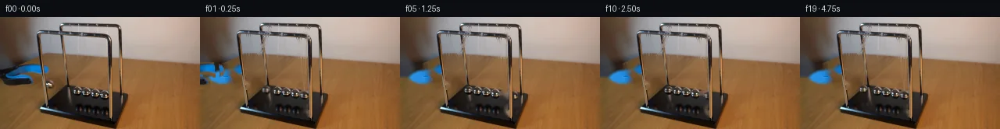

![首帧]()

Round 00
2026-11-05T17:39:13.160438+00:00像素候选变化代码 +288/−0inspection 更新
pixels e9d56704dc2daf9d · code 1e274000c2338381
查看本轮 generate.py 真实 diff
--- previous/generate.py
+++ current/generate.py
@@ -0,0 +1,288 @@
+"""Photo-derived local pixel animation of a Newton's cradle; no external renderer."""
+from pathlib import Path
+import json
+import math
+import cv2
+import numpy as np
+from PIL import Image, ImageDraw, ImageFont
+from scipy.ndimage import gaussian_filter, map_coordinates
+from artifact_io import save
+
+ROOT = Path(__file__).resolve().parent
+TMP = ROOT / '.tmp'
+TMP.mkdir(exist_ok=True)
+SOURCE = np.array(Image.open(ROOT / 'first_frame.png').convert('RGB'))
+H, W = SOURCE.shape[:2]
+Y, X = np.mgrid[:H, :W].astype(np.float32)
+SCALE = 4
+
+
+def polygon(points):
+ im = Image.new('L', (W, H))
+ ImageDraw.Draw(im).polygon(points, fill=255)
+ return np.array(im)
+
+
+def line_mask(lines, width=2):
+ im = Image.new('L', (W*SCALE, H*SCALE))
+ d = ImageDraw.Draw(im)
+ for p, q in lines:
+ d.line((p[0]*SCALE, p[1]*SCALE, q[0]*SCALE, q[1]*SCALE), fill=255, width=int(width*SCALE))
+ return np.array(im.resize((W, H), Image.Resampling.LANCZOS))
+
+
+def circle_mask(cx, cy, radius):
+ return np.clip((radius + .7 - np.hypot(X-cx, Y-cy))/.9, 0, 1)
+
+# Foreground chrome tube silhouettes, retained as photograph pixels during healing
+# and composited above the pendulum elements when they pass behind those tubes.
+front_leg = polygon([(47,22),(51,19),(54,49),(57,84),(62,117),(57,120),(53,84),(49,49)])
+right_leg = polygon([(137,30),(142,29),(145,38),(145,134),(140,135),(137,39)])
+front_mask = np.maximum(front_leg, right_leg)
+
+# Exact support-surface clipping for soft reflected images.
+base_mask = polygon([(52,117),(87,90),(163,99),(148,138)]) / 255.
+base_mask = np.clip(gaussian_filter(base_mask, .35), 0, 1)
+
+# Hand-observed source object regions. This is local inpainting, not segmentation
+# by an external model.
+tool_mask = polygon([(0,67),(16,62),(32,59),(51,59),(59,62),(63,68),(61,74),(52,77),
+ (41,74),(23,77),(14,78),(24,78),(38,78),(44,82),(44,88),
+ (38,91),(9,91),(0,86)])
+tool_mask[front_leg > 0] = 0
+left_center = np.array([63.0,86.7])
+right_center = np.array([133.4,99.8])
+left_ball_mask = (circle_mask(*left_center, 7.0)*255).astype(np.uint8)
+right_ball_mask = (circle_mask(*right_center, 6.9)*255).astype(np.uint8)
+left_wires = [((61.8,22.7),(63.0,81.5)), ((89.0,12.0),(63.0,81.5))]
+right_wires = [((126.5,26.5),(133.3,94.5)), ((138.2,12.0),(133.3,94.5))]
+wire_mask = line_mask(left_wires+right_wires, 1.5)
+wire_mask[front_mask>0] = 0
+reflection_mask = polygon([(129,110),(140,111),(143,123),(141,129),(130,127),(128,120)])
+reflection_mask[right_leg>0] = 0
+mask = np.maximum.reduce([tool_mask,left_ball_mask,right_ball_mask,wire_mask,reflection_mask])
+mask[front_mask>0] = 0
+mask[SOURCE.shape[0]-3:] = 0
+background = cv2.inpaint(SOURCE, mask, 4, cv2.INPAINT_TELEA).astype(np.float32)
+
+# Repair the broad wood area exposed by the tool using actual nearby wood grain.
+# The low spatial frequencies come from the boundary-aware inpaint. Only the
+# fine texture is transferred, so the original tabletop illumination is kept.
+wood = SOURCE[93:123,0:45].astype(np.float32)
+wood_fine = wood-gaussian_filter(wood,(2.7,2.7,0))
+wood_fine = cv2.resize(wood_fine, (64,34), interpolation=cv2.INTER_CUBIC)
+texture = np.zeros_like(background)
+texture[59:93,0:64] = wood_fine
+texture_weight = gaussian_filter((tool_mask>0).astype(np.float32),1.5)
+texture_weight[front_leg>0] = 0
+background += texture * texture_weight[...,None] * .60
+background = np.clip(background,0,255)
+
+# Fill the departing end ball region from neighboring dark platform pixels.
+# Broad inpainting is feathered and its fine platform texture is preserved.
+Image.fromarray(background.astype(np.uint8)).save(TMP/'clean_background.png')
+Image.fromarray(mask).save(TMP/'cleanup_mask.png')
+
+
+def sample_source_ball(center, radius=5.35, size=31):
… diff truncated; 201 more lines …